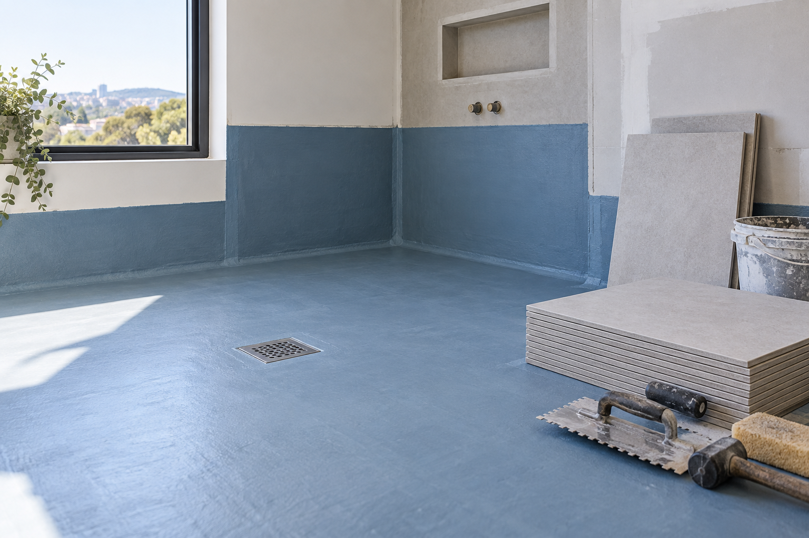

WaterproofingWhen should waterproofing be considered?
Raise waterproofing early, before tile and surface finishes are installed. The room layout, fixtures, drains and intended finish all provide helpful context for the discussion.
Explore waterproofing →